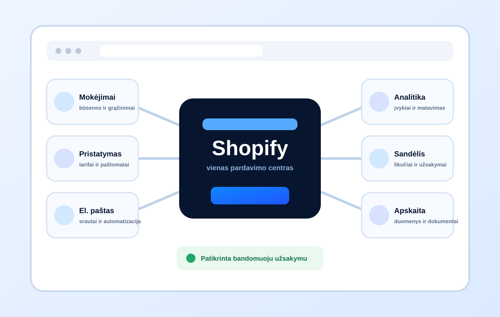

Mažiau rankinio perkėlimo
Užsakymai, likučiai, dokumentai ar klientų būsenos perduodami pagal sutartas taisykles.
Apskaita, ERP, WMS, siuntos, CRM, PIM ar rinkodara. Prieš rinkdamiesi programėlę arba API nustatome šaltinius, būsenas, išimtis ir atsakomybes.

Taisyklės prieš kodąKlaidų scenarijaiUžsakymai, likučiai, dokumentai ar klientų būsenos perduodami pagal sutartas taisykles.
Kiekvienam duomenų objektui nustatoma sistema, kuri turi teisę jį keisti.
Klaidos registruojamos, atsakingas žmogus gauna signalą ir žino, kaip pakartoti arba atkurti srautą.
Integruojame konkretų procesą, ne sistemų logotipus. Pradžioje pasirenkame vieną srautą ir jo rezultatą.
Komanda kopijuoja duomenis iš Shopify į apskaitą, ERP, sandėlį ar siuntų sistemą.
Kelios sistemos keičia tą patį likutį, o konfliktų taisyklės nėra aprašytos.
Sąskaitos, siuntų lipdukai ar grąžinimai kuriami atskirais rankiniais žingsniais.
Nėra žurnalo, įspėjimo ar žmogaus, atsakingo už nepavykusį duomenų perdavimą.
Architektūra pasirenkama tik tada, kai aišku, kokį procesą ji turi padengti.
Kas inicijuoja veiksmą, kas keičia duomenis, kur atsiranda dublikatai ir kas sprendžia išimtis.
Objektai, laukų susiejimas, formatai, privalomos reikšmės, dažnis ir pagrindinis šaltinis.
Shopify programėlė, automatizavimo platforma, tiesioginė API jungtis arba jų derinys.
Prieigos, autentifikacija, validacija, API limitai, paslapčių valdymas ir duomenų minimizavimas.
Normalus srautas, klaidingi duomenys, dublikatai, sistemos nepasiekiamumas ir pakartojimai.
Žurnalai, įspėjimai, dokumentacija, atsakomybės ir veiksmai sutrikus.
Jeigu komanda nesutaria, kuri sistema valdo kainą ar likutį, jungtis tik greičiau paskleis problemą.
Naudojame konkrečius objektus, būsenas, veiksmus, išimtis ir žmonių atsakomybes.
Rezultatas: patvirtinta proceso schemaNustatome šaltinius, transformacijas, dažnį, konfliktus ir klaidos būsenas.
Rezultatas: duomenų kontraktasPirmiausia kontroliuojamoje aplinkoje, tada su realistiškais normaliais bei klaidų scenarijais.
Rezultatas: patikrinta jungtisŽinome, kur matyti klaidą, kas ją gauna ir kaip atkurti arba pakartoti srautą.
Rezultatas: eksploatuojamas procesas* Trečiosios sistemos API, limitai, licencijos ir sutrikimai lieka išorinėmis priklausomybėmis. Jas įvertiname ir dokumentuojame, bet negalime kontroliuoti jų tiekėjo veikimo.
Su apskaitos, ERP, WMS, 3PL, siuntų, CRM, el. pašto rinkodaros, PIM ir kitomis sistemomis, jeigu jos turi tinkamą API, eksportą arba kitą patikimą duomenų mainų būdą.
Ne. Pirmiausia vertiname patikimą Shopify programėlę ar automatizavimo platformą. Individuali jungtis kuriama, kai standartinis sprendimas nepadengia kritinių taisyklių.
Tik jeigu to tikrai reikia. Dvikryptis srautas didina konfliktų riziką, todėl kiekvienam objektui pirmiausia nustatomas pagrindinis šaltinis.
Kritiniams srautams projektuojame klaidų registravimą, pakartojimus ir įspėjimus. Tylus duomenų praradimas nelaikomas priimtinu scenarijumi.
Galime sutarti stebėjimo, incidentų ir pakeitimų modelį. Reakcijos principai, atsakomybės ir prižiūrimos sistemos aprašomos atskirai.
Parašykite, kokie duomenys juda tarp kokių sistemų, kas juos keičia ir kur dažniausiai atsiranda klaida.